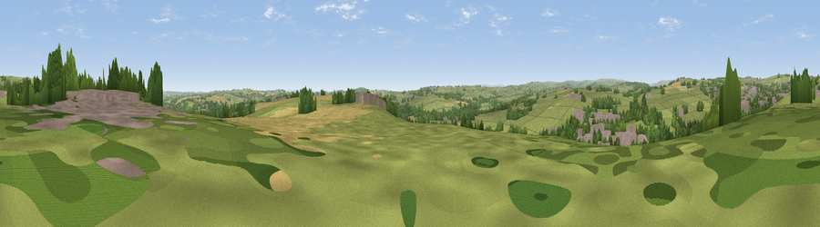

Viewpoint near Howden le Wear
#27983 in England · top 66% of its area beats it · near Howden le WearThe view, rendered

A 360° render of this exact spot computed from the terrain model, tree cover and land cover — summer colours, afternoon light, calibrated against photographs of famous viewpoints. Real trees, hedges and buildings will differ in detail.
The panorama
Grey silhouette: terrain skyline in each direction (720 bearings, Earth curvature and refraction included). Dashed green: skyline with trees (+15 m) and buildings (+8 m) as obstacles. Blue strip: how far the ground is visible on each bearing.
Where the view opens
Wedge length = distance to the farthest visible ground on that bearing (vegetation-aware). Rings at 10, 25 and 50 km.
What fills the view
64% grassland · 15% woodland · 14% cropland · 7% built-up
Angular shares of the visible panorama (visual magnitude), not map area. Landscape diversity 0.45 (0–1 Shannon).
Key numbers
More beautiful places nearby
The staircase of upgrades: each row has a higher view potential than everything closer. Driving times are estimates from straight-line distance, calibrated against real road routing — check an actual route before setting out.
| Place | Direction | Drive | Score |
|---|---|---|---|
| Viewpoint near New Hunwick | SSE · 1 km | ~4 min | 57.8 |
| Viewpoint near Crook | N · 2 km | ~6 min | 69.4 |
| Viewpoint near Billy Row | N · 3 km | ~7 min | 70.3 |
| Viewpoint near Edmondsley | NNE · 15 km | ~27 min | 72.6 |
| Viewpoint near Quarrington Hill | ENE · 17 km | ~29 min | 73.1 |
| Viewpoint near Eggleston | WSW · 18 km | ~31 min | 76.0 |
| Pontop Pike | N · 20 km | ~33 min | 77.8 |
| Viewpoint near Newton Under Roseberry | ESE · 41 km | ~60 min | 78.3 |
54.69602, -1.73660 · source: screening · position refined by local search. Computed location — check access rights before visiting.